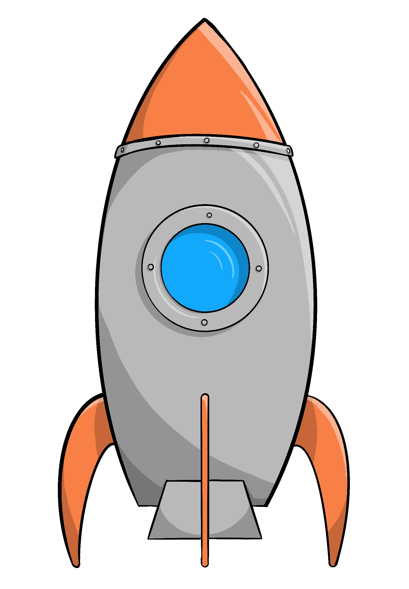
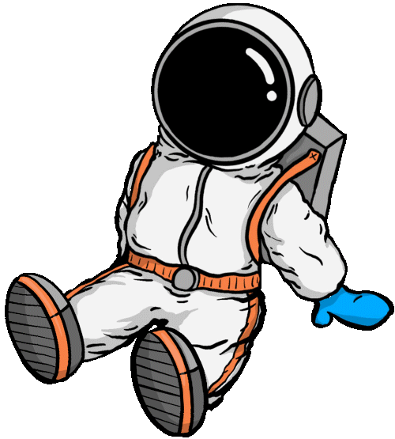
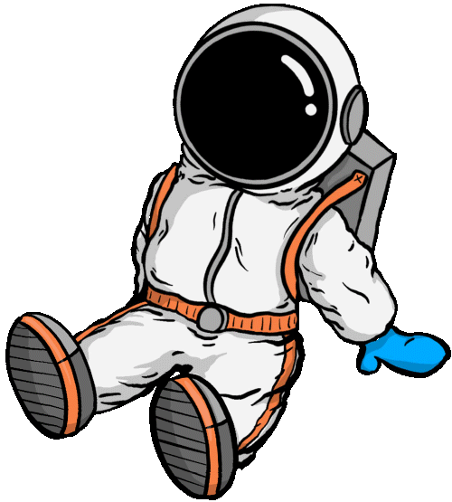
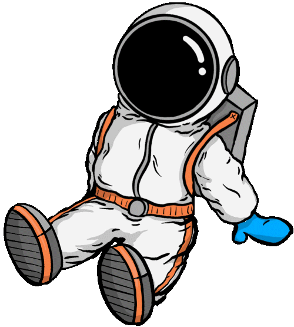

 



Vent!
Jeg synes vinden tager til.
Hvorfor mon det?
Prøv at trykke på Neptun for at finde ud af,
hvorfor.
Neptun
Neptun er den ottende og sidste planet fra solen i vores solsystem!
Vidste du at Neptun har 14 måner?